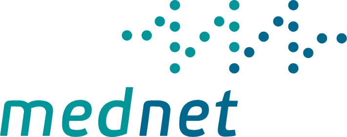
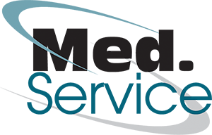
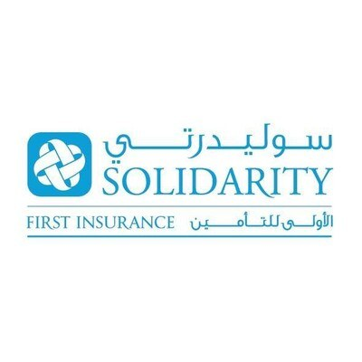
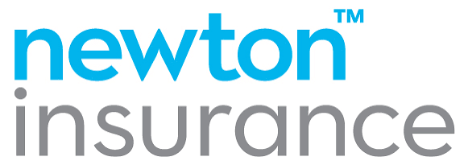
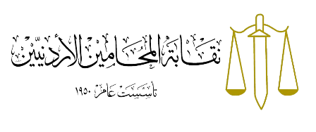

Insurers & TPAsشركات التأمين وإدارة النفقات الطبية
Right care. Right time. Lower loss ratio.الرعاية المناسبة في وقتها… ونسبة خسارة أقل
Partnering directly with insurance providers and TPAs, we deliver on-demand, patient-centric virtual care. Integrating Tadawa into your health portfolio enhances policyholder satisfaction while optimising claim costs, lowering loss ratios and modernising access.بالشراكة المباشرة مع شركات التأمين وإدارة النفقات الطبية، نقدّم رعاية افتراضية فورية تتمحور حول المريض. إن دمج تداوىٰ في محفظتك الصحية يعزز رضا المؤمَّن عليهم ويحسّن كلفة المطالبات ويخفّض نسب الخسارة ويحدّث طرق الوصول.
46% lower cost per formكلفة أقل 46% لكل نموذجJD 18.59 per visit18.59 ديناراً للزيارةVerified prescriptions & referralsوصفات وتحويلات موثّقةHakeem & Sanad integrationتكامل مع حكيم وسند
Average cost per medical form, active pilot account.متوسط كلفة النموذج الطبي، حساب تجريبي نشط.
Four leversأربعة روافع
Four ways Tadawa lowers your loss ratio.أربع طرق تخفّض بها تداوىٰ نسبة الخسارة
Family-doctor triageفرز طبيب الأسرة
A clinically owned routing decision replaces self-referral. Members see specialists when they need to, not by default.قرار توجيه سريري يحلّ محل التحويل الذاتي. يرى المؤمَّن عليهم الاختصاصيين عند الحاجة لا افتراضياً.
Shared medical recordسجل طبي مشترك
Hakeem integration plus our own EHR mean tests are not reordered when results already exist.التكامل مع حكيم وسجلنا الإلكتروني يعنيان عدم إعادة طلب فحوصات نتائجها موجودة.
Verified clinical workflowمسار سريري موثّق
Every prescription and referral is logged, time-stamped and tied to a clinical encounter, significantly reducing abuse.كل وصفة وتحويل مسجّل ومختوم بالوقت ومربوط بلقاء سريري، ما يقلّص إساءة الاستخدام كثيراً.
Chronic disease managementإدارة الأمراض المزمنة
Continuous care for diabetic, hypertensive and other chronic members reduces emergency admissions.رعاية مستمرة لمرضى السكري والضغط والحالات المزمنة تقلّل دخول الطوارئ.
Higher quality healthcareرعاية أعلى جودة
An experience policyholders actually use, leading to earlier intervention and better outcomes.تجربة يستخدمها المؤمَّن عليهم فعلاً، فتدخل مبكر ونتائج أفضل.
Sick-leave, misuse and abuse controlضبط الإجازات وإساءة الاستخدام
Sick leave only after a documented consultation with a licensed family doctor.إجازة مرضية فقط بعد استشارة موثّقة مع طبيب أسرة مرخّص.
Lower premiums, long termأقساط أقل على المدى الطويل
Resolving most cases at primary-care level lowers claim costs while fast access lifts satisfaction.حلّ معظم الحالات على مستوى الرعاية الأولية يخفّض كلفة المطالبات بينما يرفع الوصول السريع الرضا.
Integrationالتكامل
Built for the operations of insurers and TPAs.مصمم لعمليات شركات التأمين وإدارة النفقات
Member eligibility by card number and membership codeأهلية المؤمَّن عليه برقم البطاقة ورمز العضوية
Pre-approval workflow handled at reception and in-appمسار الموافقات المسبقة لدى الاستقبال وفي التطبيق
Claims reporting per member, per visit, with service linesتقارير مطالبات لكل عضو وكل زيارة مع بنود الخدمات
Hakeem and Sanad integration for records and referralsتكامل مع حكيم وسند للسجلات والتحويلات
Monthly utilisation reports: visits, diagnoses, add-ons, cost per visitتقارير استخدام شهرية: الزيارات والتشخيصات والخدمات الإضافية وكلفة الزيارة
Dedicated account manager and SLA for approvalsمدير حساب مخصص واتفاقية مستوى خدمة للموافقات
Onboarding kits for members in Arabic and Englishحزم تعريفية للأعضاء بالعربية والإنجليزية
Co-branded awareness and medical daysأيام توعية وطبية مشتركة
What we proposeما نقترحه
Make Tadawa the first stop, then measure the savings together.اجعل تداوىٰ المحطة الأولى، ثم لنقس الوفورات معاً
1Route first contact to Tadawaوجّه الاتصال الأول إلى تداوىٰ
Telemedicine around the clock plus our Amman and Tafileh clinics as the default entry point for low-acuity care.
طبابة عن بعد على مدار الساعة مع عيادتي عمّان والطفيلة كنقطة دخول افتراضية للحالات منخفضة الخطورة.
2Share downstream claimsشارك المطالبات اللاحقة
Match our members’ ER, lab, imaging and referral claims to set a per-member baseline.
طابق مطالبات الطوارئ والمختبر والأشعة والتحويلات لمؤمَّنينا لتحديد خط أساس لكل عضو.
3Run a six-month scorecardنفّذ بطاقة أداء لستة أشهر
Track cost per claim, ER visits per 1,000 members and reduction rate against agreed targets.
تابع كلفة المطالبة وزيارات الطوارئ لكل 1,000 عضو ونسبة الانخفاض مقابل أهداف متفق عليها.
Partnersالشركاء
Already in network.ضمن الشبكة بالفعل





Make Tadawa your members' first stop.اجعل تداوىٰ المحطة الأولى لمؤمَّنيك
Tell us about your members, employees or site and we come back with a proposal within two working days.أخبرنا عن المؤمَّنين لديك أو موظفيك أو موقعك ونعود إليك بعرض خلال يومي عمل.